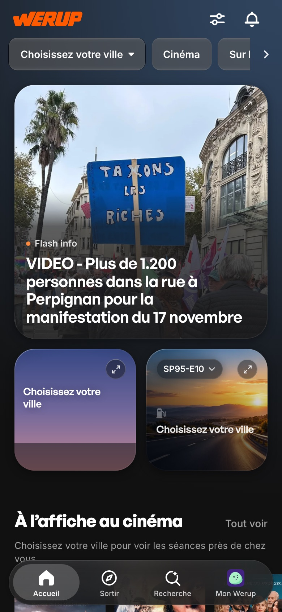
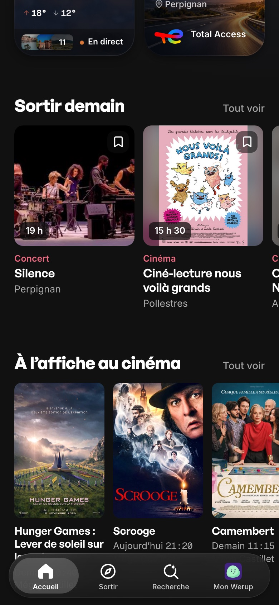
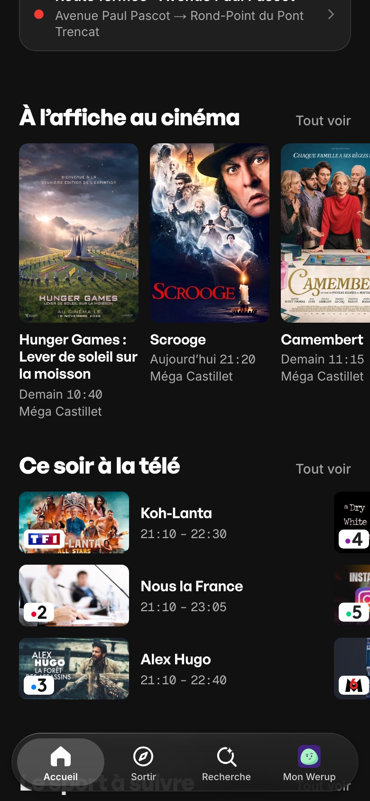
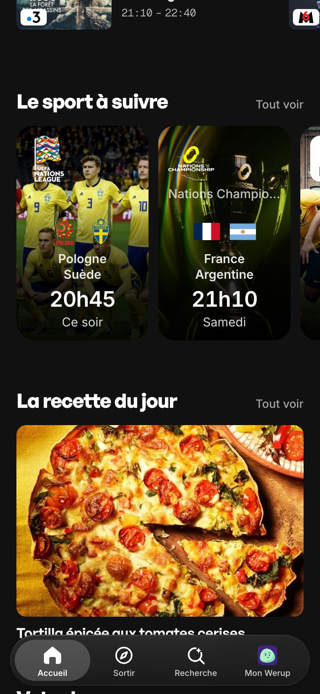
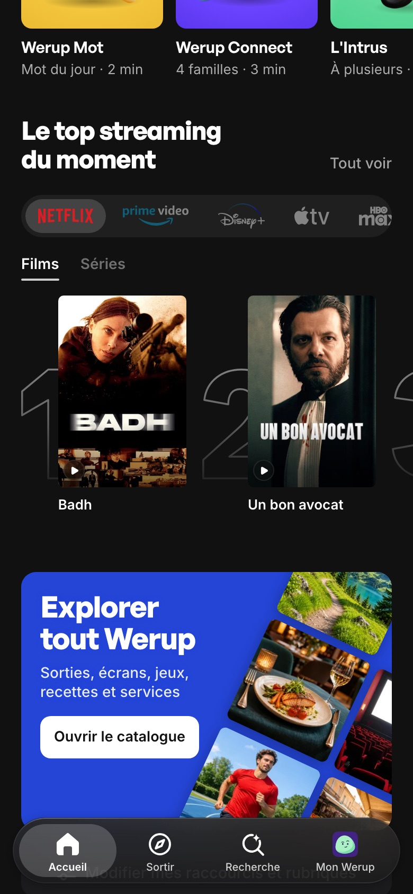

Captures de werup.app en production, sur iPhone, le 17/11 au soir.
Sans ville : « Choisissez votre ville »Le haut de l'accueil ne change pas ; tout l'accueil vous vouvoie.

Sortir demain (dès 21 h)Le soir, la section montre les sorties de demain ; « Tout voir » ouvre Sortir sur demain.

À l'affiche au cinémaUne seule porte « Tout voir » par section.

Le sport à suivre

Le top streaming du momentUn titre sur deux lignes garde « Tout voir » à droite.

Recherche : « Sur la route » en quatre portesCarburant, bornes, trafic et parkings ne sont plus sur l'accueil (doublon du widget carburant) : ils ont chacun leur tuile ici.